Couverture – Seigneur de Lumière, Jeu de
Rôle Sans Dés
« La Mort et la Lumière sont partout éternellement, et elles
commencent, finissent, luttent, veillent dans le Rêve de l’Être Sans Nom
qu’est le monde… »
Version de travail. Ce document rassemble et réorganise en un seul
livre les éléments de setting et les règles sans dés déjà définis dans
les autres fichiers.
Comment utiliser ce livre
Première partie : Le Monde
La planète, les Premiers, le panthéon en formation, le feu universel, le
Karma, les Rakashas, les époques et lieux de jeu.
Deuxième partie : Personnages
Qui sont les PJ, comment les créer (scores d’habilités, Aspect,
Attributs, foci, statut).
Troisième partie : Système sans dés
Résolution, conflits, Karma en jeu, campagnes
multi‑incarnations.
Quatrième partie : Conseils au Maître de
Jeu
Ton, thèmes, arcs de campagne, usage des dieux et des démons.
Vous pouvez lire la Première partie comme un court livre d’ambient,
puis plonger dans les règles lorsque vous avez une idée de la campagne
que vous voulez mener.
Première partie
— Le Monde de Seigneur de Lumière
1. La légende de Sam
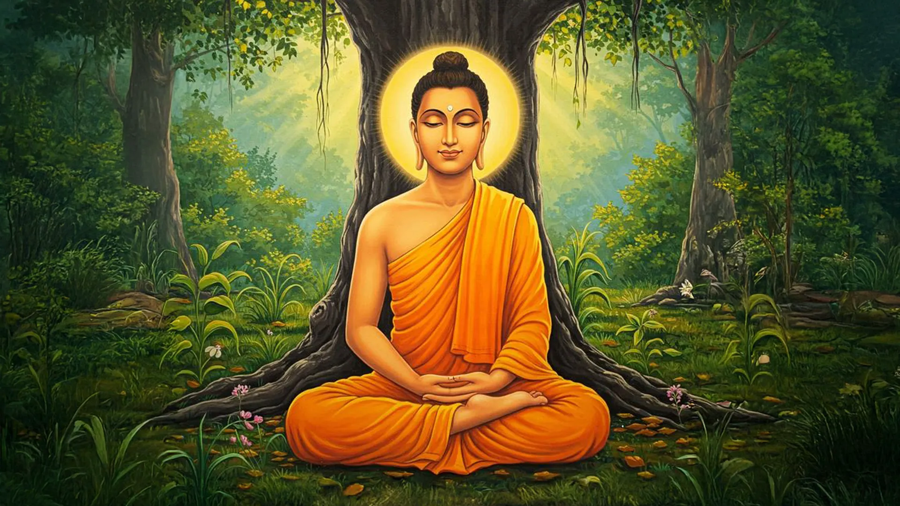
Sam en méditation sous l’arbre de la
Connaissance
« Ses disciples l’appelaient Mahasamatman et disaient qu’il était
un dieu. Il préférait cependant supprimer Maha‑et‑atman de son nom et se
faire appeler Sam. »
On raconte que tout débuta par un voyage, à bord d’un navire noir et
argent qui n’était pas un navire, portant le nom d’un bijou ancien :
L’Étoile de l’Inde. Il fendit l’obscurité interstellaire comme
une prière obstinée, emportant dans ses flancs ce qui restait de Terre :
techniciens, soldats, savants, rêveurs, criminels utiles et saints
involontaires, tous rangés dans des cuves de sommeil ou derrière des
claviers qui ronronnaient doucement.
Le vaisseau se posa sur un monde vert et rouge dont personne n’avait
noté le nom. Les Premiers descendirent des rampes, armés de
biotechnologie et d’orgueil. Ils cartographièrent les continents,
installèrent leurs stations, dressèrent des tours d’écoute et de feu. Là
où les Rakashas régnaient en tourbillons d’énergie, ils tracèrent des
pactes, puis des pièges, puis des puits. Ils étendirent leurs tentacules
du plus profond des océans aux plus hautes montagnes.
La conquête ne fut pas un seul jour de bataille, mais une lente
terraformation du monde : on parla d’« aménagement »,
de « stabilisation », de « protocole de colonisation ». Derrière ces
mots, il y avait des civilisations rasées, des jungles brûlées, des
horreurs infligées à des intelligences qui n’étaient pas humaines. Les
Premiers apprirent à faire taire ce qu’ils ne comprenaient pas, puis à
l’enchaîner, puis à l’exploiter.
Avec le temps, on récupéra des textes anciens et des noms divins :
Yama, Kubera, Brahma, Kali, Krishna… Ce n’étaient encore que des
opérateurs, des architectes, des stratèges. Mais ils avaient pris goût à
la hauteur. Les consoles devinrent des autels, les interfaces des
idoles, les procédures des rituels. L’Étoile de l’Inde se
dissipa en anneaux, en stations, en réseaux ; de ses ruines orbitales
naquit un panthéon.
Pour que ce panthéon tienne, il fallait que ceux d’en bas oublient.
On enseigna donc aux foules que le feu venait des sacrifices et non des
générateurs, que les réincarnations étaient des récompenses et non des
affectations, que la voix qui sortait des haut‑parleurs dans les Salles
du Karma n’était pas celle d’un technicien fatigué mais celle d’un dieu.
Les bibliothèques devinrent des Archives Interdites, les manuels des
textes sacrés, les circuits imprimés des mandalas qu’il était
blasphématoire de démonter.
On dit qu’en la trente‑troisième année après sa délivrance le Bouddha
revint du Nuage d’Or pour accepter une fois encore le défi du Ciel,
combattre l’ordre établi et les dieux qui l’avaient imposé. On dit bien
des choses.
Ce jeu ne vous demande pas de jouer Sam le Bouddha.
Il n’y a qu’un seul Seigneur de Lumière, qu’il ait choisi d’être Bouddha
par calcul, par esthétique, ou par ennui sacré. Mais vous vivez dans son
ombre : vous croisez ses disciples et ses ennemis, vous
voyez les traces de ses guerres sur les villes et dans les Salles du
Karma, vous profitez des brèches qu’il a ouvertes dans l’armure des
dieux.
Les PJ sont des Premiers mineurs ou leurs
descendants — ceux qui n’ont pas pris place sur le trône des dieux, mais
qui savent que la divinité est une technologie et un mensonge bien
tenu.
2. La planète et le Pont des
Dieux
Illustration – La Cité
Céleste
Le monde n’a pas de nom unique. Les hommes l’appellent par leurs
villes, les dieux par leurs temples, les Rakashas n’ont pas besoin de
cartes. Au‑dessus, une arche de lumière parcourt le ciel :
« … le nuage doré, appelé le Pont des Dieux, qui entoure le
monde, apparaît la nuit comme un arc‑en‑ciel de bronze ; le soleil rouge
y devient orange à midi. »
Ce Pont des Dieux n’est pas un miracle : c’est
l’anneau orbital, réseau d’installations héritées du vaisseau
colonisateur. Il sert de colonne vertébrale au feu
universel :
satellites de communication, d’observation et de ciblage,
plates‑formes d’armement orbitaux et atmosphériques, réseaux
d’alimentation, générateurs et relais, intelligences artificielles et
manufactures automatiques forment cette charpente invisible.
Au début, les Premiers disposaient de tout cela comme d’une boîte à
outils. Plus tard, ils en firent une théologie : les consoles devinrent
des autels, les projecteurs des miracles, les opérateurs des dieux.
3. Les Premiers, les dieux
et les hommes
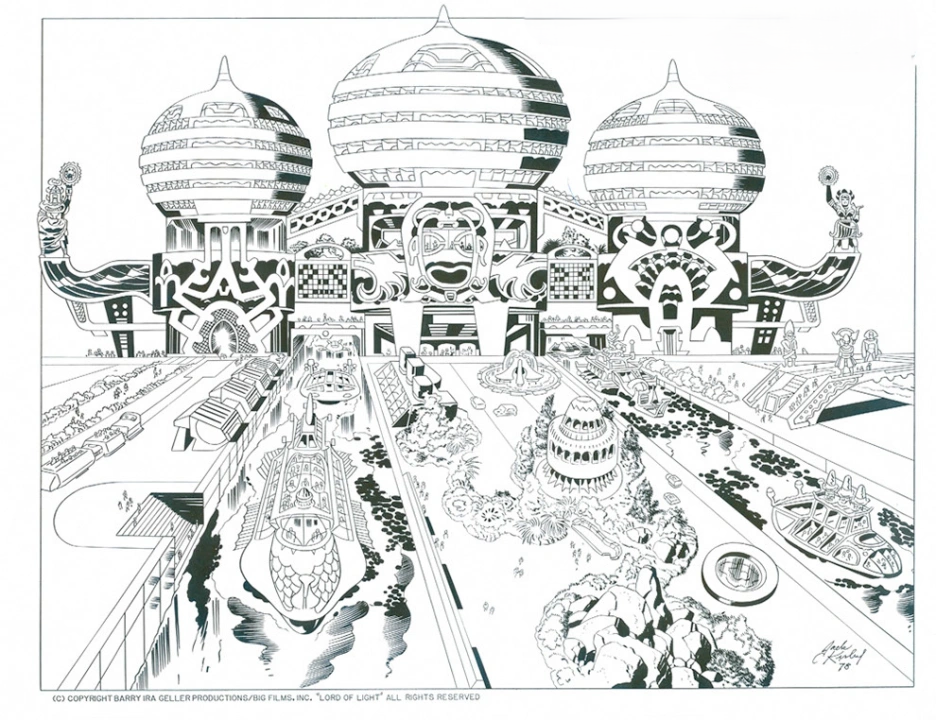
Illustration – l’Hôtel de
Hawkana
Ils venaient de Terre détruite, entassés dans un
vaisseau chargé de biotechnologie et de mémoires mortes. On les nomme
les Premiers : équipage, passagers, techniciens,
soldats, savants. Les plus habiles prirent racine dans les systèmes du
feu universel et ne les lâchèrent plus.
« Il était de moitié plus vieux que la Cité Céleste et dix dieux
à peine se rappelaient la fondation de la demeure. On le savait plus
instruit même que le dieu Kubera en ce qui concernait le Feu Universel.
Mais c’étaient là ses moindres Attributs. »
Peu à peu, certains Premiers se revêtent d’Aspects et d’Attributs :
ils deviennent dieux aux yeux de ceux qu’ils dominent.
D’autres, plus nombreux, deviennent des administrateurs de Karma, des
Lokapalas, des maîtres d’armes, des gardiens, ou se perdent dans la
masse des réincarnations.
Les PJ appartiennent à ces zones grises : assez proches du pouvoir
pour voir les ficelles, assez loin pour risquer de rompre la corde.
4. Feu universel et
technologie divine
Illustration – Machines de
Prière
Le feu universel est à la fois moteur et langage :
une toile d’énergie et de commandes qui relie vaisseau, satellites,
stations, implants, armes et Halls of Karma. Ceux qui savent lui parler
deviennent redoutables.
À l’époque de la colonisation, les Premiers lui
donnaient un nom plus technique : grille de champ unifié
(Unified Field Grid). Ce n’est que plus tard, quand ce réseau a
été sacralisé et confondu avec la volonté des dieux, qu’on lui a donné
le surnom de feu universel.
Pour le jeu, on le lit comme un réseau technologique omniprésent,
traversé par les volontés des Premiers et des IA survivantes, qui obéit
mieux à ceux dont l’esprit a été poli par des dizaines de corps
successifs.
Les Attributs techno / feu universel des dieux
(Death de Yama, feu d’Agni, Binder de Sam…) sont des maîtrises extrêmes
de ce réseau. Les PJ, eux, n’en manipulent que des
éclats : commandes locales, drones, champs limités,
foci spécialisés.
5. Karma, Salles du
Karma et réincarnation
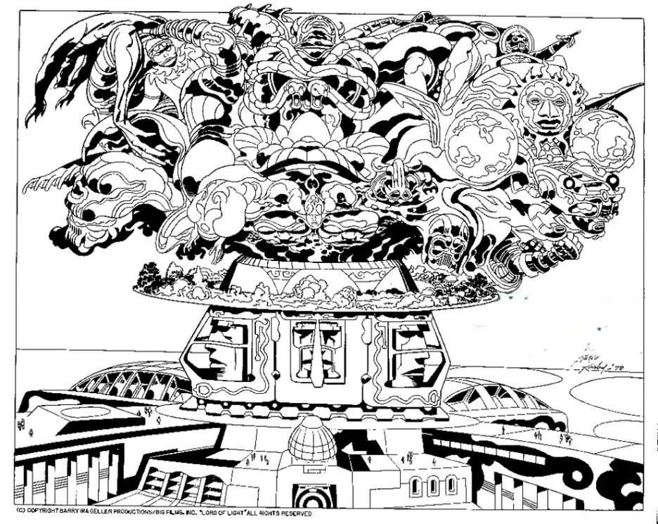
Illustration – Le palais de
Brahma
« Comment il arrangerait ses affaires avec les Maîtres du Karma,
cela le regardait, mais personne ne doutait qu’il ne trouvât un moyen de
s’en tirer le moment venu. »
Dans ce monde, la mort n’est pas toujours la fin. Les Premiers ont
appris, en étudiant les Rakashas, à capturer le
body‑image d’un individu — ce schéma électrochimique
qui persiste un instant au moment du décès — et à le rejeter dans un
autre corps.
Les Salles du Karma sont les usines de ce miracle :
elles enregistrent la vie en psych‑tape, la rejouent
comme un karmic play‑back devant des Masters de Karma,
puis décident, pour chaque âme, d’un nouveau corps, d’une nouvelle caste
et d’une nouvelle durée.
Le Karma n’est donc pas un halo mystique, mais un
dossier : un enregistrement de vos actes, relu,
commenté et tordu par des humains (ou leurs successeurs) qui ont leurs
propres intérêts, puis utilisé pour justifier l’ordre social : « Tu es
né ainsi parce que tu l’as mérité. »
Dans le jeu, le Karma n’est pas un score : il est un
carnet secret dans les mains du MJ, lourd des choix de vos PJ.
6. Rakashas, démons et autres
esprits
Illustration – Pavillon de la
joie
« Ce sont des créatures d’énergie plutôt que de matière… Leur
quête de l’immortalité personnelle les conduisit dans une voie
différente de celle suivie par l’homme. »
Les Rakashas étaient là avant l’arrivée des humains.
Ils ont abandonné la chair pour devenir des tourbillons d’énergie
conscients. Ils peuvent prendre forme, parler, parier, maudire — mais
ils ne peuvent pas revenir durablement dans un corps sans aide.
Les dieux les ont vaincus, puis liés dans des puits
magnétiques. Sam en a libéré certains, en a fait des alliés ambigus. Les
Rakashas aiment les jeux de hasard aux enjeux absurdes, les pactes aux
clauses perfides, les affrontements de flammes et de mots.
Autour d’eux gravitent d’autres créatures : esprits élémentaires
(feu, orage), slézards, nagas et animaux améliorés, ainsi que des
figures plus obscures, tapis dans les forêts ou sous les mers.
Pour vos scénarios, les Rakashas sont des puissances
extérieures au système de Karma : ils n’obéissent ni aux dieux,
ni aux castes, ni aux lois humaines. Ils peuvent être l’ennemi
impossible ou l’allié qui vous ruinera plus tard.
7. Lieux et époques de jeu
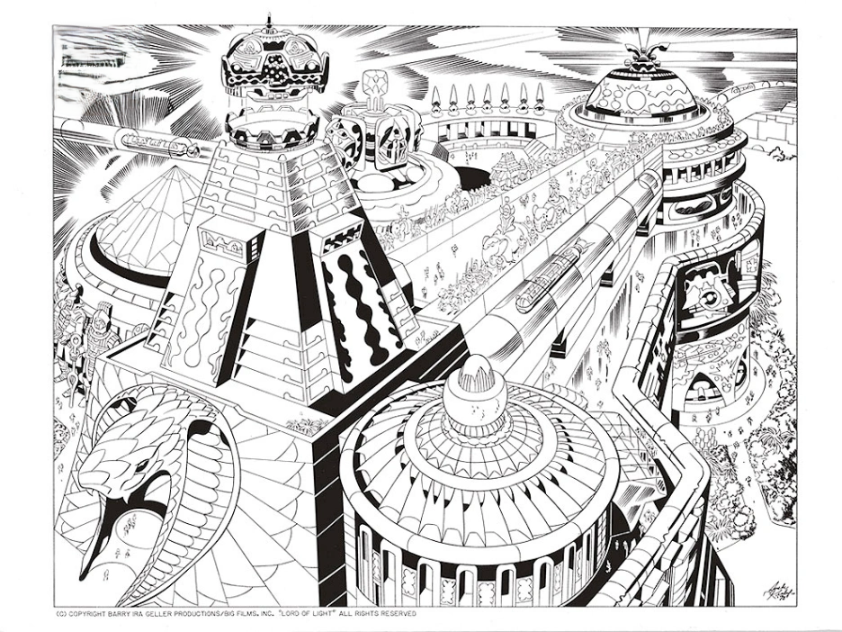
Illustration – La Cité
Céleste
Les récits sur Sam, les Premiers et les dieux ne suivent pas toujours
l’ordre chronologique. Pour le jeu, on distingue trois
époques principales, qui se croisent avec vos
campagnes.
L’époque de conquête voit un vaisseau encore récent
dans le ciel, une technologie abondante, tandis que les Rakashas
dominent encore des régions entières et que les Premiers testent les
premiers transferts et les premiers Halls.
L’époque de cristallisation du pouvoir est celle où
certains Premiers prennent des noms de dieux et enfilent leurs Aspects,
où le système des castes se durcit et où les guerres contre
l’accélérationisme s’intensifient.
L’époque proto‑panthéon arrive lorsque le panthéon
hindou est presque en place, que les Salles du Karma sont devenues des
forteresses et que Sam revient du Nuage d’Or, accélérant l’Histoire.
Lieux emblématiques :
Cité Céleste : centre du pouvoir divin ;
Mahartha, Lananda, Khaipour : villes sur le fleuve,
lieux de campagnes militaires et de miracles ;
Puits d’Enfer : prison des Rakashas ;
Monastère de Ratri : machine à prières, seuil entre
ciel et jungle.
Vos campagnes peuvent sauter d’une époque à l’autre, en suivant les
mêmes âmes dans différents corps.
8. Bestiaire
Créatures d’énergie,
démons, Bêtes et Esprits
Ce bestiaire rassemble quelques figures non humaines
importantes du monde : créatures d’énergie, bêtes de guerre, esprits et
symboles. Il s’appuie sur ce qui est conté des dieux et des démons et
reste volontairement sélectif : ajoutez, découpez ou renforcez les
entrées selon les besoins de vos campagnes.
Rakashas
« Native inhabitants of this world… creatures of energy rather
than matter. »
Nature : esprits natifs faits d’énergie, capables
de prendre mille formes (flammes, bêtes, silhouettes humaines…). Ils ont
abandonné la chair pour devenir des champs stables de puissance
consciente.
Rôle : ennemis anciens des dieux, puis prisonniers
dans les puits magnétiques comme Hellwell. Certains pactisent avec Sam
contre le panthéon.
En jeu :
puissance hors du système de Karma ;
alliés capricieux, joueurs, très sensibles aux paris, serments et
humiliations ;
présence idéale pour rappeler que le monde n’appartient pas qu’aux
humains ;
certains se manifestent comme des gardes de feu ou
élémentaires liés à des anneaux, rituels ou Attributs, parfaits pour
annoncer l’arrivée d’une puissance ou accompagner un pacte conclu avec
Sam ;
gardiens et témoins des anciennes guerres contre
d’autres puissances non humaines : Nagas, Gandharvas, People-of-the-Sea,
démons Kataputna, Mothers of the Terrible Glow, Dakshinis, Pretas,
Skandas, Pisakas (autant de factions prêtes à émerger en campagne).
Chats fantômes de la
forêt de Kaniburrha
Illustration – chats
fantômes
Nature : grands félins albinos enchantés.
Effet : ils voient toujours la jungle, même
lorsqu’ils parcourent une ville : escaliers, statues et rues se
transforment en rochers, arbres et sentiers à leurs yeux.
En jeu :
prédateurs parfaits pour une chasse onirique dans les rues de la
Cité Céleste ;
instruments d’un masque ou d’un grand sort pour
traquer les PJ à travers des illusions.
Slizzards
Nature : énormes montures reptiliennes utilisées
comme cavalerie lourde.
Rôle : bêtes de guerre figurant dans les
tapisseries et sur les champs de bataille (notamment à Keenset).
En jeu :
cavalerie monstrueuse des armées divines ou des princes ;
opportunité de scènes spectaculaires (ponts qui cèdent, charges dans
la boue, Rakashas lâchés dans les rangs).
Garuda, oiseau de Vishnou
Illustration – Garuda
Nature : créature mi‑esprit, mi‑oiseau, monture
mythique capable d’écraser des chars de son bec.
Rôle : transporte dieux et grands PNJ au‑dessus des
villes et des batailles.
En jeu :
icône du panthéon : sa simple ombre peut suffire à déclencher une
scène ;
moyen pour un dieu de quitter le théâtre ou d’y descendre
brutalement.
Jackbirds
Nature : oiseaux bavards, parfois porteurs d’âmes
de poètes réincarnés.
Rôle : commentateurs ironiques des événements,
récitant poèmes et prophéties.
En jeu :
voix méta qui commente les actes des PJ ;
cible idéale pour une flèche d’un dieu agacé.
Grak‑birds et bêtes de la
jungle
Grak‑birds : oiseaux dressés pour chanter, parfois
sacrifiés s’ils chantent faux.
Bêtes de la jungle : éléphants, grands félins et
autres créatures menés par les Rakashas contre les armées humaines.
En jeu :
décor vivant des palais et des camps ;
renforts que les dieux ou les Rakashas peuvent lâcher sur un théâtre
de guerre.
Nagas
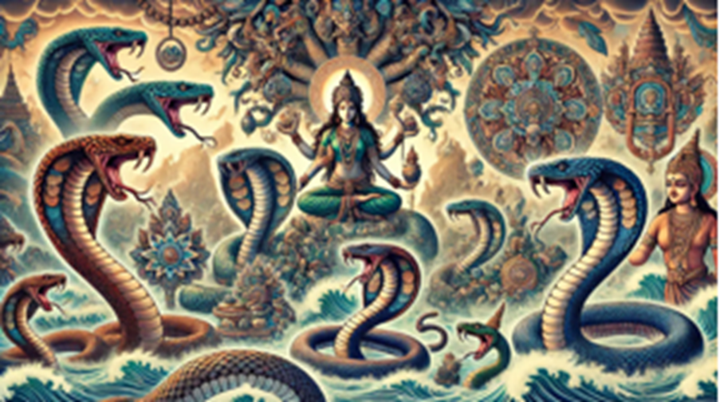
Illustration – Nagas
Nature : serpents sacrés et esprits serpentins liés
aux Temples et aux machines de prière.
Rôle : gardiens symboliques de certains sanctuaires
et interfaces.
En jeu :
incarnation visible des protections du Temple ;
support ou focus pour des Attributs liés à l’eau, aux profondeurs ou
aux secrets.
People-of-the-Sea
Nature : peuple marin ancien, lié aux profondeurs
océaniques et aux côtes oubliées.
Rôle : ennemis primordiaux des dieux lors des
guerres qui précédèrent la première cité humaine.
En jeu :
civilisations englouties, cités-ports hantées ou traités anciens
passés avec les mers ;
menaces venues des fonds marins (marées folles, monstres, tempêtes
dirigées).
Gandharvas
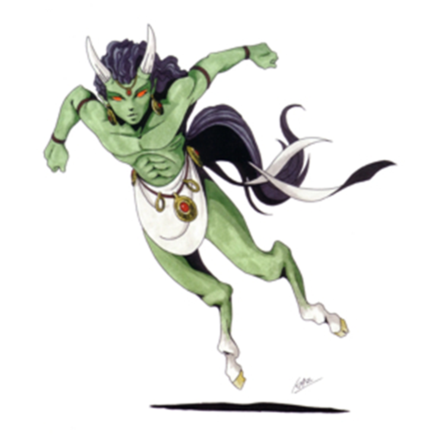
Illustration – Gandharvas
Nature : cohortes d’esprits liés à la musique, à
l’air et à la lumière, mais perçus ici surtout comme une armée
surnaturelle.
Rôle : adversaires des dieux dans les premières
guerres, aujourd’hui relégués au rang de noms dans les vieux chants des
Rakashas.
En jeu :
fantassins ou cavaliers aériens, porteurs de trompes et de bannières
de lumière ;
souvenirs vivants dans les grands sorts, masques ou illusions des
dieux.
Dakshinis,
Pretas, Skandas, Pisakas et démons Kataputna
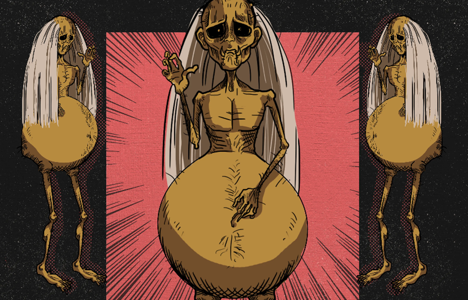
Nature : ensemble de démons et d’esprits hostiles,
classés par familles ou castes de l’ombre.
Rôle : noms de légions évoqués dans la litanie des
guerres anciennes.
En jeu :
banque de noms pour des cultes, troupes démoniaques ou esprits
spécialisés (charognards, parasites psychiques, guerriers du désordre,
etc.) ;
prétexte pour introduire une nouvelle faction sans trahir l’esprit
des légendes connues.
Sea‑wights
Nature : esprits marins dont le cri accompagne le
palais de Nirriti.
En jeu :
élément d’ambiance sonore ;
piste vers des puissances marines oubliées ou des passages vers
d’autres plans.
Deuxième partie —
Personnages Joueurs
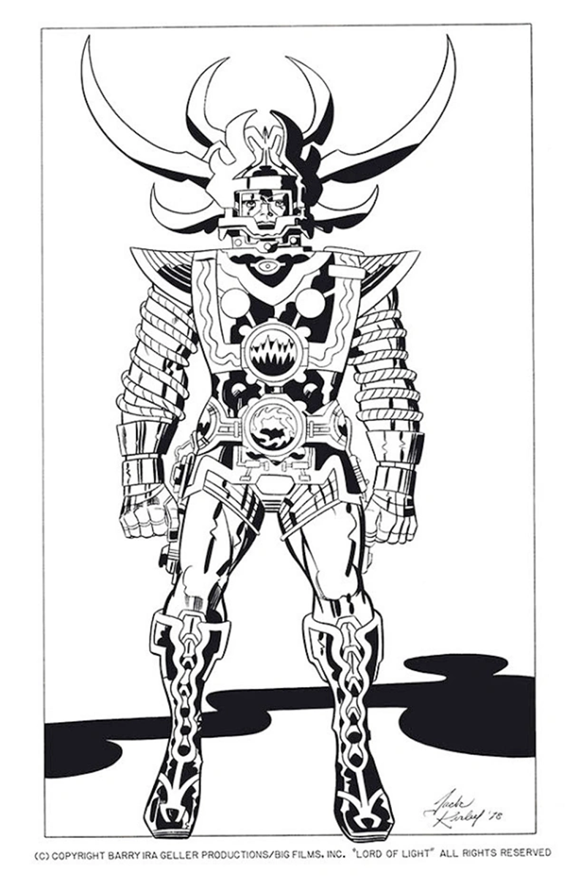
Illustration – Aspect Divin
8. Qui vous jouez
Vous n’êtes ni Brahma, ni Yama, ni Sam. Vous êtes ceux qui passent à
proximité des légendes :
Vous avez un pied dans la technologie et l’autre
dans la mythologie. Les mortels vous prennent pour des
saints, des sorciers, des démons. Les dieux savent que vous n’êtes que
des humains… et que c’est déjà beaucoup.
9. Scores d’habilités (60
points)
Chaque PJ est défini par quatre scores d’habilités
comparatifs :
Tech / Gyaan / Feu universel
Maîtrise de la technologie du vaisseau, des systèmes avancés, des
interfaces.
Sert à : comprendre / détourner des systèmes, saboter proprement,
piloter des engins ou reconfigurer des réseaux (Pont des Dieux, Halls,
relais…).
Avec un score élevé : tu es l’ingénieur, le hacker, le bricoleur
génial que l’on appelle dès qu’une porte refuse de s’ouvrir ou qu’une
arme refuse de tirer.
Avec un score faible : tu dépends des autres pour tout ce qui
dépasse l’outil simple ou l’arme standard ; une interface mal comprise
peut te trahir.
Questions à te poser :
« Qu’est‑ce que je comprends mieux que la plupart des gens dans les
systèmes hérités du vaisseau ? »
Psy / Dimag / Interface
Résistance mentale, compréhension des scanners, stabilité de l’esprit
entre les vies et netteté de votre image‑propre (les PJ
à Psy élevé récupèrent plus vite leurs Attributs après une
réincarnation).
Sert à : encaisser les pressions psychiques, lire / interpréter des
scans, résister aux illusions et aux implants, garder le cap à travers
les réincarnations.
Avec un score élevé : tu encaisses les trips de Sam, les visions de
Mara, les réécritures d’identités ; ton esprit reste cohérent même quand
le corps change.
Avec un score faible : tu es plus vulnérable aux grands sorts, aux
manipulations mentales, aux fragments de souvenirs importés d’autres
vies.
Questions à te poser :
« Quel est mon niveau d’introspection ou de sensibilité ? »
« Quelle importance mon Atman (âme) accorde‑t‑il à sa condition
éternelle ? »
Warfare / Yuddh / Combat
Combat, tactique de petites unités, survie sur un monde hostile.
Sert à : tout ce qui implique manœuvres, embuscades, duels,
commandement de troupes, usage intelligent du terrain.
Avec un score élevé : tu sais où placer les forces, quand reculer,
quand frapper ; ton nom circule dans les mess et chez les Rakashas.
Avec un score faible : tu peux être courageux, mais tu restes un
civil armé dans un monde de professionnels de la
guerre.
Questions à te poser :
« Quelle bataille passée m’a valu ma réputation (bonne ou mauvaise)
? »
« Quelle erreur tactique je refuse de refaire ? »
Charisma / Maya / Influence
Charisme, manipulations symboliques, mise en scène
techno‑religieuse.
Sert à : négocier avec des foules, des dieux ou des Rakashas,
déclencher des révoltes, calmer une émeute, jouer avec les récits
officiels.
Avec un score élevé : ta simple présence change la donne ; tes mots
et tes silences sont des armes.
Avec un score faible : tu peux avoir raison, mais tu as du mal à te
faire entendre ou à façonner l’histoire qu’on racontera de toi.
Questions à te poser :
« Quel est mon public naturel (soldats, foules, techniciens,
mystiques…) ? »
« Quel mensonge ou quelle vérité ai‑je déjà fait passer en légende ?
»
Les joueurs disposent de 60 points à répartir entre
ces quatre scores, avec deux contraintes :
chaque score doit être compris entre 5 et
30 ;
ces valeurs servent uniquement à établir une
hiérarchie entre PJ et PNJ.
Plus votre score est élevé dans un domaine, plus vous dominez les
confrontations qui s’y rapportent… sauf si le contexte, la ruse ou le
Karma en décident autrement.
10. Aspect personnel (10
points)
Chaque PJ possède un Aspect personnel :
une image profonde de ce qu’il est au cœur de toutes ses vies ;
un titre, une vocation, une promesse.
Exemples :
« Navigateur du Feu Universel » ;
« Maître des scans et des souvenirs » ;
« Stratège de la frontière » ;
« Tisseur d’images sacrées ».
L’Aspect coûte 10 points à la création, et il
persiste d’une incarnation à l’autre. Il ne se paye
qu’une fois. Quand une scène touche directement au champ de votre
Aspect, le MJ peut vous accorder un avantage narratif :
capacité à frapper plus haut que votre score, à voir ce que d’autres ne
voient pas.
11. Attributs personnels et
foci
Les Attributs personnels sont des versions
mineures des Attributs divins :
échos lointains de la Mort de Yama, du Celui qui lia les démons de
Sam, des illusions de Mara, de l’ivresse de Krishna ;
attachés à votre body‑image, pas à votre
corps.
Niveaux d’Attribut
Quatre niveaux théoriques :
Initié (5 points) : petits effets spécialisés,
courte portée, souvent dépendants d’un focus.
Expert (10 points) : pouvoir nettement au‑dessus
des mortels dans un domaine précis.
Maître (20 points) et Dieu (40
points) : réservés aux PNJ majeurs, hors de portée des PJ à la
création.
À la création, un PJ peut investir typiquement 10 à 20
points en Attributs (par exemple un Expert et un Initié, ou
plusieurs Initiés), en restant au plus au niveau
Expert.
Foci
Les foci sont des objets ou dispositifs qui servent
de supports à vos Attributs : talismans, armes,
consoles, implants, reliques, etc.
Un Attribut, au niveau des PJ, a presque toujours besoin d’un
focus :
objet technologique (console, gant, implant) ;
talisman ou relique ;
arme ou armure spécialisée.
Ils peuvent :
permettre l’accès à un Attribut ;
amplifier sa portée ou sa puissance ;
ou combiner plusieurs effets pour un coût plus élevé.
Pour le jeu, on distingue trois grandes catégories :
Focus d’accès (5 points par Attribut)
Sans ce focus, l’Attribut est inutilisable ou extrêmement réduit.
Exemple : console personnelle pour un contrôle de drones, fouet ou bâton
pour un pouvoir de flamme, masque rituel pour des illusions.
Focus d’amplification simple (5 à 10
points) 5 points : améliore l’Attribut dans un contexte
restreint (type de terrain, présence d’infrastructure,
rituel précis, etc.). 10 points : bonus plus large (effet plus fiable, portée
accrue, meilleure zone d’effet).
Focus majeur / relique (15 à 20 points)
Combine plusieurs fonctions : accès + amplification, ou impacte
deux Attributs liés.
En contrepartie, il est souvent volumineux, très identifiable, sacré ou
surveillé par le Temple, et source d’ennuis (convoitise, jalousies,
contrôles).
Un focus ne transforme jamais un PJ en véritable dieu : il sert à
structurer et colorer l’usage d’un Attribut déjà
défini, pas à franchir l’échelle Maître / Dieu.
Ces valeurs reprennent celles du Guide du Maître, que vous
pouvez durcir ou assouplir selon le ton de votre campagne.
Exemples : Aspects et
Attributs des dieux
Les PJ ne sont pas des dieux, mais les récits de la Cité
Céleste montrent bien à quoi ressemble l’échelon au‑dessus. Les
profils ci‑dessous donnent au MJ des repères : Aspects et Attributs
typiques de quelques divinités majeures. Ils s’appuient sur ce que l’on
conte de leurs gestes, mais tu peux les tordre selon ta campagne.
Yama, Seigneur de la Mort
Rôle : ex‑Premier devenu bras armé du panthéon ;
gardien de la frontière entre vie et mort, commandant de campagnes
contre démons et Rakashas.
Aspect de la Mort : silhouette sombre, armure
discrète, regard qui ne cligne pas ; la simple présence d’Yama suffit à
refroidir une salle de fête.
Attributs divins :
Mort : regard, gestes ou armes qui tuent net, sans
souffrance inutile ; capacité à arrêter un cœur, à « couper le fil »
d’un corps‑prêt.
Arsenal de la Mort : armes spécialisées (tubes de
feu, flèches guidées, champs de gravité) conçues dans le Vasty Hall of
Death.
En jeu :
adversaire « propre », qui ne torture pas mais ne discute pas non
plus très longtemps ;
figure d’ultimatum : quand Yama arrive en personne, c’est que les
dieux ont décidé qu’on a dépassé toutes les lignes rouges.
Kali, Candi, Durga
Rôle : déesse de la destruction, de la bataille et
des passions extrêmes ; amante / ennemie de Sam, future épouse
d’Yama.
Aspect de la Destructrice : beauté féline, sourire
trop large, ombre de griffes autour d’elle ; dans les souvenirs, elle
chevauche les guerres primitives, robe éclaboussée d’éclats
nucléaires.
Attributs divins :
Furie incarnée : amplification de toute violence
présente ; une bataille où elle entre devient automatiquement une
boucherie.
Transmigration bestiale : facilité à prendre des
avatars de bêtes (tigresse, oiseau de feu, etc.) et à y emmener son
esprit combatif.
Regard mortel : version plus sauvage et moins
contrôlée de la Mort d’Yama.
En jeu :
tentation pour les PJ Accélérationnistes : une alliée possible, mais
pour qui la guerre compte plus que les idéaux ;
déclencheur de « trop tard pour reculer » : son arrivée signale que
la campagne bascule dans la haute tragédie.
Brahma, Créateur de Haut Ciel
Rôle : architecte du système, maître de la
théologie officielle et des grandes orientations karmiques.
Aspect du Créateur : vieillard magnifique entouré
de symboles (roue de la loi, lotus, océans miniatures) ; son sourire est
toujours légèrement en avance sur la conversation.
Attributs divins :
Création doctrinale : capacité à réécrire la carte
du réel telle qu’elle est perçue par les masses (intégrer le bouddhisme,
réétiqueter un hérétique, redéfinir une fête).
Autorité karmique : modifie les priorités des
Salles du Karma, bénit ou maudit des lignées entières.
En jeu :
antagoniste lointain, rarement en première ligne, mais dont une
signature peut valoir une armée ;
source de quêtes : obtenir une dérogation, un édit, une relecture du
dossier karmique de tel peuple ou de tel PJ.
Vishnu, le Préservateur
Rôle : urbaniste cosmo‑politique ; il porte dans sa
tête la Cité Céleste et la façon dont elle doit rester « en place
».
Aspect du Préservateur : calme, impeccablement
habillé, sourire fatigué ; il voit chaque pierre de la Cité Céleste
comme une variable dans un plan d’ensemble.
Attributs divins :
Préservation : renforts logistiques,
redéploiements, modifications discrètes des infrastructures pour amortir
les chocs.
Barrière entre ville et jungle : c’est sa volonté
qui sépare la Cité Céleste de Kaniburrha ; rompre cette barrière réclame
des pouvoirs de niveau Mara.
En jeu :
défenseur de l’ordre établi, parfois en désaccord avec les excès de
ses pairs, mais rarement jusqu’à la rupture ;
interlocuteur idéal pour des PJ qui veulent négocier des limites
plutôt qu’une révolution ouverte.
Shiva, Seigneur de la
Destruction
Rôle : garant que, quand quelque chose doit
vraiment disparaître, cela disparaît ; Lord of Destruction et du chaos
contrôlé.
Aspect de la Destruction : danseur maigre aux yeux
brûlants ; son trident est à la fois arme et curseur cosmique.
Attributs divins :
Trident de destruction : annihilation ciblée
(corps, artefact, pan de paysage, voire ville entière).
Danse cosmique : amplification de toutes les forces
de rupture présentes (émeutes, séismes, fissures politiques).
En jeu :
deus ex machina pour clore une ère, une ville, un artefact trop
puissant ;
patron de certains Accélérationnistes… tant que cela l’amuse.
Rudra, archer des dieux
Rôle : dieu guerrier et tireur d’élite, lié aux
Lokapalas ; célèbre pour ses duels à distance et sa haine tenace des
jackbirds.
Aspect du Chasseur : silhouette sombre, visage qui
ne sourit presque jamais, arc lourd toujours à portée de main.
Attributs divins :
Arc de foudre : flèches traqueuses de chaleur
capables de parcourir des kilomètres ou de poursuivre une cible à
travers la Cité Céleste.
Œil du tireur : perception balistique quasi
parfaite ; il peut viser à travers fumées, masques et illusions.
En jeu :
menace à longue portée : il peut frapper un PJ ou un PNJ sans jamais
être physiquement présent dans la scène ;
incarnation de la rancœur divine (les jackbirds) : utile pour
rappeler que les dieux n’oublient ni affronts, ni chansons.
Krishna le Sombre
Rôle : dieu des plaisirs, de la musique, des excès
; spécialiste des états modifiés de conscience.
Aspect de l’Ivresse Divine : jeune homme sombre,
cheveux et barbe comme des ressorts, toujours avec des pipes ou une
flûte, entouré d’Apsarases.
Attributs divins :
Ivresse divine : vague de joie / tristesse / extase
qui emporte tous ceux qui l’entendent ; peut renverser une bataille en
dissolvant la volonté.
Musique sans suite : certaines mélodies marquent à
jamais ceux qui les entendent (cauchemars, illumination, folie
douce).
En jeu :
chaos social ambulant : ses fêtes couvrent des complots, ses
caprices peuvent protéger ou condamner un PJ ;
inspiration pour des Attributs de PJ liés à la musique, à l’ivresse,
à la perte de contrôle.
Kubera, Lokapala des trésors
Rôle : gardien de richesses, constructeur de lieux
(Pavilion of Silence), ami paradoxal de Yama.
Aspect de la Fortune : gros, rieur, entouré de
mets, de coupes, d’objets de luxe ; pas aussi inoffensif qu’il en a
l’air.
Attributs divins :
Correspondance inanimée : ses constructions portent
des émotions gravées dans la pierre (Heartbreak, Fear, Despair…) qui
s’imposent à ceux qui y séjournent.
Maîtrise des ressources : réoriente flux de
richesses, convois, projets gigantesques.
En jeu :
commanditaire de lieux puissants, d’artefacts chargés d’affects
;
allié possible pour des PJ bâtisseurs ou architectes de
révolutions.
Mara, Seigneur des
rêves et des grands sorts
Rôle : maître des rêves et des illusions
collectives ; il tient la Cité Céleste dans ses scénographies.
Aspect du Rêveur : silhouette changeante sous un
manteau de toutes les couleurs ; ses yeux regardent toujours un point
que les autres ne voient pas.
Attributs divins :
Grand sort : capacité à superposer une réalité
mentale à une région entière (les chats fantômes voient enfin la Cité
Céleste, un festival devient cauchemar).
Illusions parfaites : altère tous les sens, y
compris ceux des dieux.
En jeu :
outil pour justifier des scènes très oniriques sans quitter la Cité
Céleste ;
ennemi d’autant plus dangereux qu’il peut « corriger » la mémoire de
ce qui vient d’être vécu.
Ratri, Dame de la Nuit
Rôle : gardienne de la nuit, des peurs et des
refuges ; elle sait éteindre la lumière même au cœur de la Cité
Céleste.
Aspect de la Nuit : femme pâle en sari bleu nuit,
souvent silencieuse, associée aux pluies douces, aux ombres
protectrices.
Attributs divins :
Voile de nuit : obscurité totale, sans étoiles ni
reflets, qui recouvre un lieu ou une région.
Refuge des ombres : ceux qu’elle protège peuvent se
déplacer et agir dans cette nuit comme en plein jour.
En jeu :
parfaite complice pour des opérations discrètes ou des embuscades
;
sa colère peut transformer la Cité Céleste en jungle hostile, même
aux dieux.
Helba, dieu/déesse des
voleurs
Rôle : patron(ne) des voleurs, escrocs,
récupérateurs d’artefacts divins ; change de sexe à chaque
incarnation.
Aspect du Cambrioleur : figure androgyne, élégante,
toujours parée de trophées volés.
Attributs divins :
Plunder : vol d’objets quasi inaccessibles
(talisman du Binder, capes de démons, joyaux des Mothers) en exploitant
failles techniques et sociales.
Discrétion narrative : ses forfaits deviennent des
anecdotes ou des légendes confuses ; difficile de prouver qu’Helba est
coupable.
En jeu :
contact précieux pour des coups impossibles ;
rival ou mentor pour un PJ voleur à fort Charisma / Maya.
Varuna le Juste
Rôle : conscience juridique du panthéon ; quitte la
Cité Céleste lorsqu’il juge certaines décisions insoutenables.
Aspect du Juste : dieu grave, vêtu sobrement,
accompagné de scribes et de symboles de jugement.
Attributs divins :
Pesée des serments : ressent les parjures, les
promesses trahies, les pactes rompus.
Justice implacable : peut marquer quelqu’un d’un
sceau karmique qui le poursuit à chaque réincarnation.
En jeu :
possible protecteur des PJ contre des abus flagrants du Temple
;
son départ de la Cité Céleste est un signe fort qu’un seuil moral a
été franchi.
Agni, Seigneur du feu
Rôle : dieu du feu universel offensif ; l’un des
rares à pouvoir rivaliser avec les armes anciennes.
Aspect du Feu : silhouette maigre aux yeux
brûlants, entourée de chaleur, portant des lunettes de protection quand
il travaille.
Attributs divins :
Feu universel de destruction : rayons capables de
vaporiser un dieu en armure, voire de percer le dôme de la Cité
Céleste.
Purification par le feu : brûle reliques, démons ou
anomalies technologiques jusqu’à la dernière trace.
En jeu :
« artillerie stratégique » des dieux ; si Agni tire, c’est que la
négociation a échoué ;
source d’armes uniques ou de traces de vitrification dans le
paysage.
Ganesha, Faiseur de dieux
Rôle : conseiller rusé, plus architecte de
personnes que de lieux ; comprend comment naissent les figures
divines.
Aspect de l’Arbitre : massif, réfléchi, souvent
ironique ; l’un des rares à parler à Shiva sans détour.
Attributs divins :
Genèse d’images divines : aide à concevoir des
Aspects qui fonctionneront réellement sur les foules.
Lucidité politique : voit les conséquences à long
terme d’un martyr, d’une purge, d’une exécution.
En jeu :
excellent PNJ pour discuter stratégie à l’échelle d’un panthéon
;
peut avertir les PJ que tuer quelqu’un « crée un symbole » plus
dangereux que la personne.
Murugan, dieu de la
jeunesse et des armes
Rôle : jeune dieu guerrier, impatient, préoccupé
par son prestige et ses avatars successifs.
Aspect du Champion : beau, brillant, un peu
arrogant ; change de corps comme on change de costume.
Attributs divins :
Champion de la vitesse : réactions et déplacements
surhumains en combat.
Image héroïque : très difficile à discréditer
publiquement ; les récits retombent toujours à son avantage.
En jeu :
rivalité avec des PJ martiaux ou charismatiques ;
peut basculer du côté Accélérationniste si sa gloire est en
jeu.
Maya, Maîtresse des illusions
Rôle : déesse de l’illusion et de la narration ;
hante les Archives et les coulisses de la Cité Céleste.
Aspect de l’Illusion : femme aux yeux verts et au
rire bref, vêtue de vert ; toujours légèrement en décalage avec la
réalité.
Attributs divins :
Illusion intime : fabrique des expériences
subjectives si fortes qu’elles valent des souvenirs (comme la projection
chez Tak).
Réécriture de réputation : modèle ce que l’on
raconte de quelqu’un autant que ce qu’il est.
En jeu :
antagoniste subtile, plus dangereuse dans les rumeurs que dans les
duels ;
parfaite pour piéger les PJ dans des histoires dont ils auront du
mal à sortir.
Ces profils restent volontairement souples : ils donnent une
couleur d’Aspect et 1–3 Attributs
dominants par dieu. Pour le jeu, place les dieux très au‑dessus
de l’échelle des PJ (niveau Dieu, plusieurs Attributs) et utilise‑les
comme forces de décor, de pression ou de récompense, plutôt que comme
adversaires « à vaincre ».
12. Création de personnage —
résumé
Concept et époque
Choisissez un concept et une première époque (conquête, cristallisation,
proto‑panthéon).
Scores d’habilités
Répartissez 60 points sur les 4 scores (5–30
chacun).
Aspect personnel
Définissez un Aspect et dépensez 10 points.
Attributs et foci
Investissez jusqu’à 30 points restants en Attributs
(max Expert) et foci.
Statut et ressources
Utilisez ce qui reste pour votre grade, vos ressources, vos
contacts.
Troisième partie — Système
sans dés
Illustration – Conflits sans
dés
13. Principe général
Il n’y a pas de dés. Il n’y a que :
les scores d’habilités ;
le contexte (terrain, préparation, aides,
surprises) ;
les conséquences dramatiques.
Quand deux forces s’affrontent, le MJ compare d’abord les scores
pertinents :
si un protagoniste est nettement supérieur et non
handicapé, il domine ;
en cas de proximité ou de désavantage sévère, la ruse, les
ressources et les choix moraux décident.
14. Conflits et scènes
Quelques repères :
Duel / combat :
comparez surtout Warfare / Yuddh / Combat ;
tenez compte des armes, de l’armure, de la surprise.
relations avec dieux, Temple, dissidents, Rakashas.
Ce dossier ne donne pas de bonus chiffrés. Il pèse lorsque le PJ
passe par un Hall of Karma :
quels Masters lisent ce dossier ?
que valorisent‑ils ? que détestent‑ils ?
La réincarnation n’est pas un jet de sauvegarde, mais une
décision institutionnelle.
16. Religion, prières et
faveurs
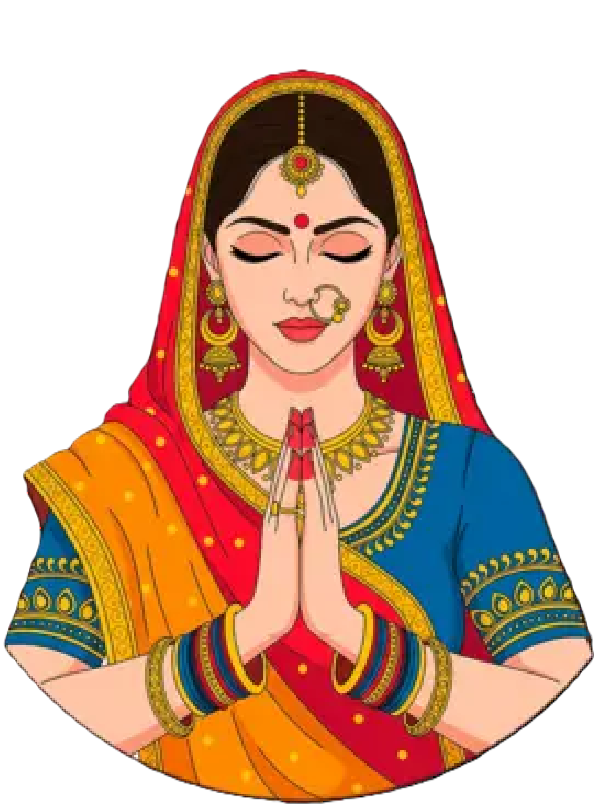
Illustration – Prières et
offrandes
« — Cela convient parfaitement, j’imagine, à ceux qui se font appeler
des dieux.
— Se font appeler ? Tu te trompes, dit Yama. La divinité est beaucoup
plus qu’un nom. C’est un état, une condition de l’être. On n’y arrive
pas du seul fait qu’on est immortel, car le plus humble des travailleurs
des champs peut arriver à une existence continue. Tient‑elle au fait
qu’on prend un Aspect ? Non, car n’importe quel hypnotiseur compétent
peut jouer avec l’image qu’on a de soi et celle qu’on offre aux autres.
Tient‑elle au fait qu’on peut activer un Attribut ? Évidemment non, car
je peux inventer et construire des machines plus puissantes et beaucoup
plus précises que n’importe quelle faculté cultivée par l’homme. Être
dieu est une qualité : celle de pouvoir être soi‑même à un point tel que
nos passions correspondent avec les forces de l’univers, si bien que
ceux qui nous regardent le comprennent sans même qu’on leur dise notre
nom. Un poète antique a dit que l’univers est plein d’échos et de
correspondances. Un autre a écrit un long poème sur un enfer, où chaque
homme subissait une torture de même nature que les forces qui avaient
gouverné son existence. Être dieu signifie reconnaître en soi ce qui est
important et le faire concorder avec tout ce qui existe. Alors, au‑delà
de toute morale, de toute logique, de toute esthétique, on est le vent,
le feu, la mer, la montagne, la pluie, le soleil ou les étoiles, le vol
d’une flèche, la fin d’un jour, l’enlacement amoureux. On règne par les
passions qui gouvernent les hommes. Et ceux qui contemplent les dieux
disent alors, sans même savoir leurs noms : « Il est le Feu, Elle est la
Danse, Il est la Destruction, Elle est l’Amour. » Donc, pour répondre à
ton affirmation, ils ne se font pas appeler des dieux, mais sont
divinisés par tous ceux qui les contemplent. »
Dans ce monde, la religion n’est pas seulement un
outil du Temple : c’est aussi une façon pour les mortels de se situer
par rapport aux forces qui les dépassent.
aux yeux des foules, les dieux sont des personnes lointaines mais
sensibles aux offrandes, aux fêtes, aux serments ;
aux yeux des techniciens, ils sont des opérateurs qui ont poussé
leurs Aspects et leurs Attributs jusqu’à se confondre avec des
puissances réelles ;
aux yeux des PJ, ils sont tout cela à la fois : patrons possibles,
ennemis, sources de miracles et de catastrophes.
Piété et dieux de
prédilection
Chaque PJ peut, s’il le souhaite, avoir un ou deux dieux de
prédilection (ou un Rakasha protecteur, ou Sam le Bouddha,
selon l’orientation de la campagne) :
cela se note dans son dossier karmique narratif
;
cela colore sa façon de parler, de jurer, de choisir ses fêtes et
ses interdits ;
cela indique au MJ qui écoute quand le PJ prie
vraiment.
Un même dieu peut être vénéré différemment :
Varuna comme garant des serments, Agni comme feu purificateur ;
Kubera comme maître des trésors, Kali comme mère protectrice et
terrible ;
Krishna comme ami intime, conseiller ou amant divin lointain.
Règle : la prière a un prix
Une simple prière murmurée au fond d’une tranchée ne suffit pas. Pour
attirer l’attention d’un dieu, un PJ doit :
poser un geste de piété significatif (offrande
coûteuse, risque personnel, acte conforme à l’Aspect du dieu) ;
accepter que le MJ inscrive ce geste dans le
dossier karmique : le dieu « a entendu ».
Le MJ peut alors noter, en coulisses, une faveur en
latence chez ce dieu pour ce PJ. Elle n’est pas chiffrée :
c’est une permission narrative.
Faveurs divines en jeu
Quand cela sert la fiction, le MJ peut « dépenser » une faveur
latente pour :
adoucir une conséquence (le PJ est grièvement
blessé plutôt que mort, un verdict karmique est moins sévère) ;
ouvrir une porte (un prêtre du bon dieu prend le PJ
au sérieux, un miracle discret se produit : panne qui cesse, feu qui
s’éteint, vision utile) ;
accorder un éclair de puissance : pendant une
scène, le PJ agit brièvement au‑dessus de sa catégorie
dans le domaine du dieu (coup d’éclat de Charisma / Maya pour un protégé
de Krishna, réussite technique improbable pour un dévot d’Agni ou de
Ganesha, etc.).
En échange, le MJ est en droit de :
demander au PJ de tenir parole (vœu, promesse,
interdits) ;
faire peser les attentes du culte : convocations,
requêtes, jalousies, rivalités avec d’autres dieux ;
laisser le Temple ou les ennemis du dieu s’intéresser de
près au PJ.
La piété devient ainsi une véritable ressource pour
les PJ, mais jamais gratuite.
17. Multi‑incarnations
« … le pouvoir transféré est faible au début, puis croît à mesure
que tu occupes le corps. C’est pourquoi il vaut mieux cultiver un
Attribute… » (paraphrasé)
À chaque changement d’époque, vos PJ peuvent choisir la
réincarnation plutôt que la mort définitive.
Procédure :
Scène au Hall : play‑back, audience, éventuelle
négociation.
Profil de nouvelle vie : caste, cadre, accès
techno, symbolique du corps.
Nouvelle fiche :
redistribution des 60 points de scores, en
cohérence avec le profil ;
Aspect conservé tel quel ;
Attributs conservés (même liste, même niveau) mais
joués affaiblis au début de la vie ;
retrouvant progressivement leur pleine force.
Le score Psy / Dimag / Interface sert ici de repère :
avec un Psy faible, le handicap peut durer plusieurs scénarios
;
avec un Psy dans la moyenne, les Attributs reviennent à leur plein
effet au fil de quelques scènes fortes ;
avec un Psy très élevé, le PJ se « recale » plus vite dans son
nouveau corps, et le MJ peut lever la pénalité dès les premières scènes
marquantes cohérentes avec son Aspect.
Ainsi, la continuité ne vient pas de chiffres qui montent, mais de la
saga de vos âmes.
Quatrième partie —
Conseils au Maître de Jeu
Illustration – Dieux, démons et mortels
sur l’échiquier
18. Ton et thèmes
Le monde de Seigneur de lumière n’est ni fantasy, ni SF pure
:
c’est une théocratie technologique qui se prend
pour un panthéon ;
où les dieux sont des techniciens qui ont oublié qu’ils le sont
;
où les démons sont plus honnêtes sur leur nature que les anges.
Cherchez :
les ambiguïtés morales plutôt que les alignements
simples ;
les duels de mots autant que les duels d’énergie
;
les conséquences à long terme plutôt que les
victoires immédiates.
19. Gérer l’échelle de
puissance
Les grands dieux (Sam, Yama, Kali, Brahma, Kubera, Krishna…) sont
au‑dessus de l’échelle des PJ. Ils sont :
des forces de la nature ;
des employeurs ou ennemis distants ;
ou des présences dont on sent les effets sans les
voir.
Un PJ ne bat pas Yama en duel loyal. Il peut, au mieux, survivre à sa
rencontre ou influencer ses décisions par des voies détournées.
20. Proposer une première
campagne
Quelques idées d’arc :
Monastère de Ratri : les PJ sont techniciens et
moines lorsqu’arrive un projet de machine à prières interdite ;
Guerre sur le fleuve : escorteurs, opérateurs ou
espions pendant la montée en puissance de Nirriti ;
Enfants des Halls : réincarnations successives
autour d’un même Hall de province, entre pressions du Temple et
ingérence de dieux.
Dans chaque cas, laissez les PJ croiser les grands
événements de la Légende de Sam sans les remplacer : ils peuvent être
les ombres qui portent la torche, pas la torche elle‑même.
21. Inspirations et
chronologie
Les grands épisodes de la Légende de Sam ne sont pas toujours
racontés dans un ordre simple. Pour le jeu, considère la chronologie
comme malléable :
certains récits appartiennent au temps de la conquête et des guerres
contre les Rakashas ;
d’autres se situent au cœur de l’âge des dieux, quand la Cité
Céleste est déjà établie ;
d’autres encore relèvent des années de purges, de doutes et de
chutes.
À ta table, choisis l’ordre qui sert ta campagne. Après tout,
Sam se souvient, et le temps est un outil comme les
autres.


 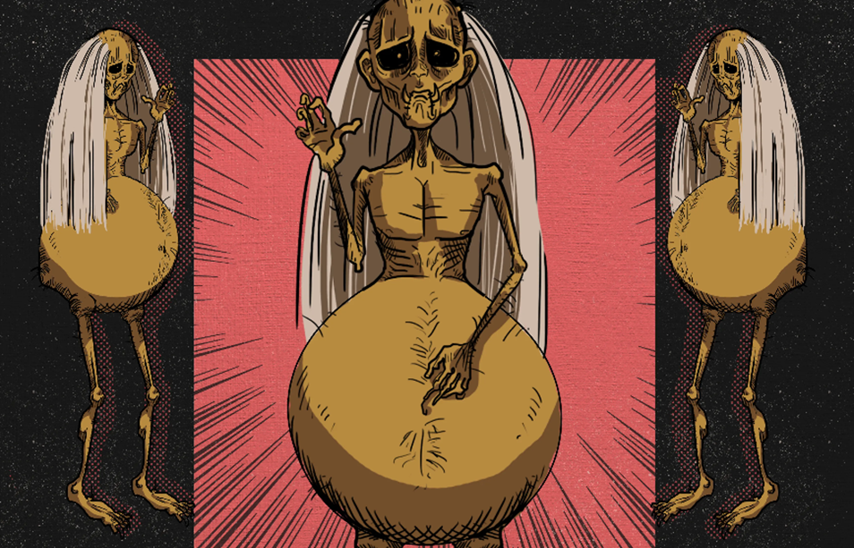
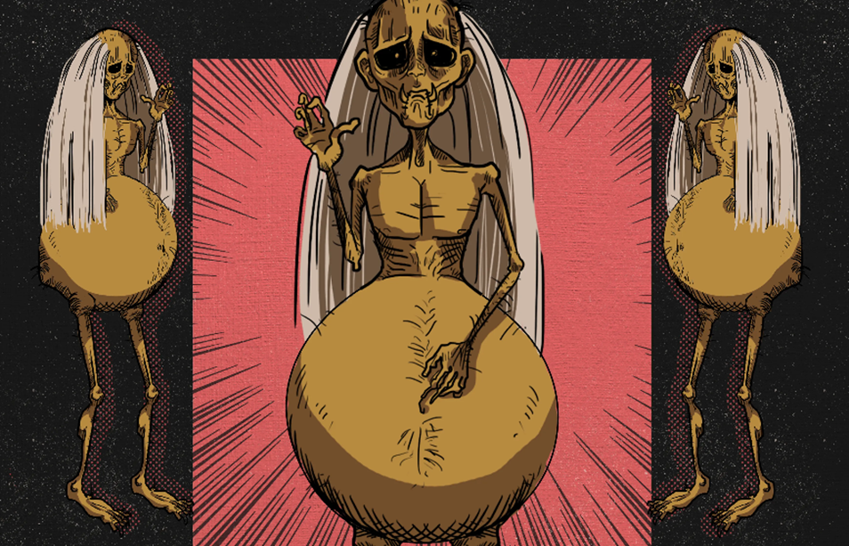